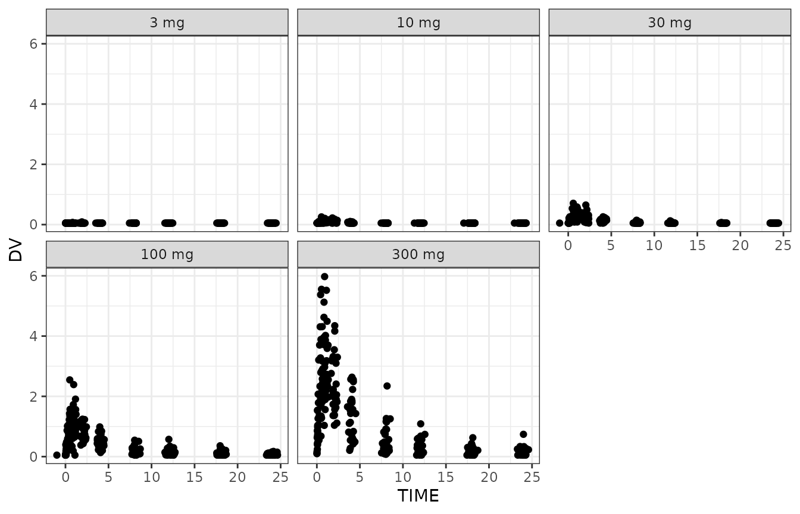
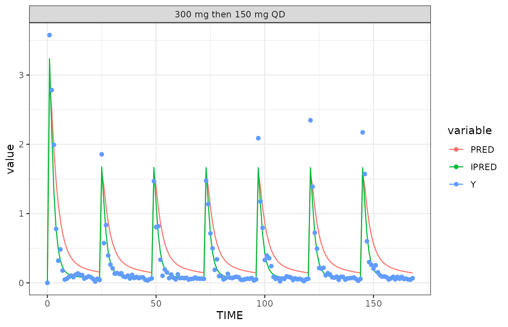

Built 2023-11-04 using NMsim 0.0.4.915.
Objectives
This vignettes aims at enabling you to
Use
NMsimto simulate Nonmem models with a given input data setDistinguish between and perform the most common types of simulations:
new subjects,
Simulate multiple new subjects and derive prediction intervals
Simulate more than one Nonmem model in one
NMsim()function callImportant arguments
Speed up NMsim by avoiding large table statements
Add residual variability to an already performed model simulation using
NMsim.
Prerequisites
You should have configured NMsim with the path to the
Nonmem installation and maybe also PSN. See NMsim-config.html.
Don’t worry - it is very easy.
Estimation based on single dose, simulation of multiple doses
The situation is like this: We collected PK and PD data from a single ascending dose trial on a drug candidate. The following plot shows the data for no other reason than pointing out clearly that the data informing the model was single dose, and we will be simulating a different dosing regimen.

A PK model was estimated using Nonmem. We have on file the model
input and output control streams (here with extensions .mod
and .lst respetively), parameter estimates
(.ext) and estimated random effects
(.phi).
We want to predict concentrations in a multiple dose regimen. This is a regimen that we have not studied in clinical trials so far, and we have decided to use population PK simulations for this purpose.
Generating a simulation input data set
The pop PK model was estimated using an ADVAN subroutine with
extravascular dosing in compartment 1 and the central compartment is
compartment 2. This information is needed because the compartment
numbers in the simulation data set will be created to match this. We
shall see that this is the only information needed about the model for
NMsim to be able to simulate it.
It does not matter to NMsim how we create a simulation data set as long as we get it into a data.frame structure. For the example, we used functions included with NMsim, but you can use anything. We create a regimen with a loading dose of 300 mg followed by 150 QD for 6 days. Notice that the compartment numbers match the compartment numbers that were used when estimating the model.
### multiple dose regimens with loading are easily created with NMcreateDoses too
## We use ADDL+II (either method easy)
doses <- NMcreateDoses(TIME=c(0,24),AMT=c(300,150),addl=data.frame(ADDL=c(0,5),II=c(0,24)),CMT=1)
doses <- transform(doses,trt="300 mg then 150 mg QD")
## Add simulation records - longer for QD regimens
dat.sim <- addEVID2(doses,time.sim=0:(24*7),CMT=2)
## sort data set
setorder(dat.sim,ID,TIME,EVID)
## Adding a row identifier (generally not necessary)
dat.sim$ROW <- 1:nrow(dat.sim)
write_fst(dat.sim,"simulate-results/dat_sim.fst")We check the simulation data set for various potential issues in
Nonmem data sets using NMdata::NMcheckData and summarize
the number of doses and observations:
NMcheckData(dat.sim,type.data="sim")
#> No findings. Great!A brief overview of the number of events broken down by event type
EVID and dose amount AMT:
| trt | EVID | AMT | Nrows |
|---|---|---|---|
| 300 mg then 150 mg QD | 1 | 150 | 6 |
| 300 mg then 150 mg QD | 1 | 300 | 1 |
| 300 mg then 150 mg QD | 2 | NA | 169 |
Showing the top five rows for understanding what the data now looks like. Notice that the following are not issues:
- Data contains a mix of numeric and non-numeric columns
- Columns are not sorted in Nonmem-friendly style with non-numeric columns to the right
#> ID TIME EVID CMT AMT II ADDL MDV trt DV ROW
#> 1: 1 0 1 1 300 0 0 1 300 mg then 150 mg QD NA 1
#> 2: 1 0 2 2 NA NA NA 1 300 mg then 150 mg QD NA 2
#> 3: 1 1 2 2 NA NA NA 1 300 mg then 150 mg QD NA 3
#> 4: 1 2 2 2 NA NA NA 1 300 mg then 150 mg QD NA 4
#> 5: 1 3 2 2 NA NA NA 1 300 mg then 150 mg QD NA 5Simulation of a new subject
This is the first time we are using NMsim, and we just
want to try the simplest thing we can think of. Simulate a new subject
on the considerd multiple dose regimen with our estimated PK model from
the single dose study.
file.mod <- file.project("nonmem/xgxr021.mod")
simres <- NMsim(file.mod=file.mod,
data=dat.sim)We plot population and individual predictions as the simulations of
(in this case) the typical subject and one simulated subject. The
variable called Y is the individual prediction plus
residual variability. paper. The code is included to show that the
results from NMsim are ready to be plotted. The main reason
data is transformed to long format (melt) is to get ggplot2
to generate the legend automatically.
datl <- as.data.table(simres) |>
melt(measure.vars=cc(PRED,IPRED,Y))
ggplot(datl,aes(TIME,value,colour=variable))+
geom_line(data=function(x)x[variable!="Y"])+
geom_point(data=function(x)x[variable=="Y"])+
facet_wrap(~trt)
The reason we can plot a simulation with residual variability is that
the control stream includes a variable Y defined with
residual variability in $ERROR:
Y=F+F*ERR(1)+ERR(2)More on residual variability in case you don’t have such a line later in this paper.
What happened?
NMsim uses automation tools from NMdata
to
- Save the data in a Nonmem-friendly format
- Create a simulation control stream based on the referenced input control stream
- Update the initial values based with estimated values
- Modify input data-related sections for reading input siulation data
- Modify output table file names and paths to generate simulation output tables
- Run Nonmem
- Read output tables and combine them with input data into one data object
The generated files have all been stored in a folder called
NMsim next to the estimation control stream. More on that
shortly in the section “A few basic additional arguments to
NMsim”.
Let’s see the first few lines of the returned object:
simres[1:3]
#> ROW ID TIME EVID CMT AMT II ADDL DV MDV TVKA TVV2 TVV3 TVCL KA
#> 1: 1 1 0 1 1 300 0 0 0 1 2.1666 75.729 150.06 13.978 2.1666
#> 2: 2 1 0 2 2 NA NA NA 0 1 2.1666 75.729 150.06 13.978 2.1666
#> 3: 3 1 1 2 2 NA NA NA 0 1 2.1666 75.729 150.06 13.978 2.1666
#> V2 V3 CL Q IPRED Y PRED RES WRES
#> 1: 56.493 150.06 24.289 8.4865 0.0000 0.0000 0.0000 0 0
#> 2: 56.493 150.06 24.289 8.4865 0.0000 0.0000 0.0000 0 0
#> 3: 56.493 150.06 24.289 8.4865 3.2364 3.5774 2.8907 0 0
#> trt model nmout
#> 1: 300 mg then 150 mg QD NMsim_xgxr021_noname TRUE
#> 2: 300 mg then 150 mg QD NMsim_xgxr021_noname TRUE
#> 3: 300 mg then 150 mg QD NMsim_xgxr021_noname TRUENotice a few things about the returned data:
- All columns from the output tables defined in the input control stream are there. We will soon learn how to modify this
- Input data columns are there too (like
trt). - Additional columns (
modelandnmout) may be familiar toNMdatausers. - We will soon learn where the “_noname” in the
modelcolumn comes from.
Multiple models
Before we continue with that model, we want to compare a simulation
based on this model to another model we are considering.
NMsim can do this and collect the data into one object:
## file.mod <- "../nonmem/xgxr014.mod"
files.2.mod <- file.project(c("nonmem/xgxr021.mod","nonmem/xgxr114.mod"))
simres.2models <- NMsim(file.mod=files.2.mod,
data=dat.sim
)In case multiple models are provided, NMsim simply loops
over them. It does collect all the results, and we can use the
model column to separate the two simulations. Since we are
so far just simulating on subject with each model, it makes litlle sense
to compare individual preditions. We just plot the population prediction
(PRED):
ggplot(simres.2models,aes(TIME,PRED,colour=model))+geom_line()+
facet_wrap(c("trt"),scales="free")
For simplicity, we shall show the rest of the examples for just one model. Any of them could be run on multiple models the same way as shown above.
A few basic additional arguments to NMsim
The first couple of examples were run with the bare minimum of
arguments - estimation control stream and simulation data set. You are
obviously encouraged to read the help of NMsim to learn
about the many useful features it has, and you will learn some more in
this vignette. But there are a few arguments that you should learn about
at this point already. Here they are:
-
dir.simsPath to a folder in which all generated files will be stored. Use this to avoidNMsimwill write into the directories where your estimation models are. They may not belong there at all. You may want to separate the model development step from the post-processing step. You are encouraged to explore whatNMsimleaves in this directory (you will find fully reproducible simulation Nonmem runs including simulation input data). -
name.simGive your simulation a meaningfull name. We did not do this above, soNMsimcalled it “noname”. -
text.tableVery important. This redefines the output table section from the estimation control stream to the simulation control stream. The estimation control stream may have too many variables printed (which will make Nonmem slow), or it may not have some that are useful for the simulation analysis. See how this is used below. Once you get used to this argument, you will use it very frequently. -
seedA numeric value that will be used in Nonmem’s $SIMULATION section
You will learn about a few more arguments in the next examples.
Most common reasons for NMsim to fail or be slow
If NMsim can find the Nonmem executable and/or PSN, it
should work on basically any models where where it makes sense to
replace the $ESTIMATION by a $SIMULATION. If
NMsim fails or behaves unexpectedly, make sure to read the
output from Nonmem in the R console. If NMsim complains it
cannot find the output tables, it is likely because Nonmem failed and
did not generate them.
There is one thing about the Nonmem model evaluation you have to
remember. Nonmem cannot run a model if it uses variables that are
unavailable. It may be a covariate in the model that you did not include
in your data set. And often the estimation models include variables in
output tables that were not used for anything else by Nonmem than being
read from the input data set and printed in output tables. In fact, this
was exactly why we included a row identifier calle ROW when
generating the simulation data set. If we do not do that, we get this
error:
Starting NMTRAN
AN ERROR WAS FOUND IN THE CONTROL STATEMENTS.
AN ERROR WAS FOUND ON LINE 60 AT THE APPROXIMATE POSITION NOTED:
$TABLE ROW TVKA TVV2 TVV3 TVCL KA V2 V3 CL Q PRED IPRED Y NOPRINT FILE=NMsim_xgxr021_noname.tab
X
THE CHARACTERS IN ERROR ARE: ROW
479 THIS ITEM IS NOT LISTED IN MODULE NMPRD4 AND MAY NOT BE DISPLAYED.
cp: cannot stat 'NMsim_xgxr021_noname.tab': No such file or directory
Error in NMscanTables(file, quiet = TRUE, as.fun = "data.table", col.row = col.row, :
NMscanTables: File not found: /home/philip/R/x86_64-pc-linux-gnu-library/4.2/NMsim/examples/nonmem/NMsim/xgxr021_noname/NMsim_xgxr021_noname.tab. Did you copy the lst file but forgot table file?
Results could not be read.Nonmem gets to writing the $TABLE but cannot find a
variable called ROW. Again, we fixed that by including
ROW. In many cases, the best way to fix this is to reduce
the $TABLE section using the text.table
argument. All we need from the simulation results are population and
individual predictions anyway. We could have omitted ROW in
the input data set and done something as simple as
simres <- NMsim(file.mod=file.mod,
data=dat.sim,
text.table="PRED IPRED Y")text.table can help avoid many of these problems. And if
NMsim is slow, this is a potentially a very large
low-hanging fruit. In a benchmark example, I reduced a (very large)
simulation run time from ~1.5 hours to ~7 minutes this way.
More subjects and prediction intervals
To create a prediction interval based on the selected model, we need
to simulate multiple new subjects. There are two ways to easily obtain
that. One is to repeat (rbind) the simulation input
dataset, one repetetion per new subject, and then update the
ID column to get distinct subjects.
Multiple subjects created in simulation input data
The follwing shows how one could generate 1000 subjects using
data.table. (I use data.table a lot, if you
can provide a good way to do this without, I am happy to include
that).
dat.sim.1000 <- NMdata::egdt(
as.data.table(dat.sim)[,!("ID")]
,
data.table(ID=1:1000)
)
dat.sim.1000[,ID:=.GRP,by=.(ID,trt)]
## order with respect to new IDs
setorder(dat.sim.1000,trt,ID,TIME,EVID)
## check dataset
NMcheckData(dat.sim.1000,type.data="sim")We now simulate 1000 subjects by plugging in this data object:
simres.n1000.1 <- NMsim(file.mod=file.mod,
data=dat.sim.1000,
dir.sims="~/NMsim_vignette", ## where to store simulation files
name.sim="N1000_datarep"
)Multiple subjects generated by Nonmem
The other way to simulate multiple subjects is making use of Nonmem’s
SUBPROBLEMS simulation feature which makes Nonmem rerun the
simulation the specified number of times. Notice that to do this, we use
the dat.sim data without the 1000 replications. We then
make use of the NMREP column generated by
NMdata::NMscanData to redefine the ID
column:
simres.n1000.2 <- NMsim(file.mod=file.mod,
data=dat.sim,
subproblems=1000
dir.sims="~/NMsim_vignette", ## where to store simulation files
name.sim="N1000_subproblems"
)
simres.n1000.2 <- as.data.table(simres.n1000.2)[,ID:=.GRP,by=.(NMREP,ID,trt)]The two approaches are computationally about equally fast, the most significant difference probably being in Nonmem reading a smaller or larger simulation input data file. Unless the input dataset becomes very large, it is merely a question of preference of the modeler which one to use. In a case where the simulated patients need different dosing or sample schedules, the manual construction of the data is needed - because it’s not a straightforward replication.
The prediction interval
We now plot a prediction interval - in this case based on the results
of the simulation using SUBPROBLEMS; this makes no
difference to how to derive the prediction interval.
simres.pi <- as.data.table(simres.n1000.2)[,setNames(as.list(quantile(IPRED,probs=c(.05,.5,.95))),cc(ll,median,ul)),
by=.(trt,TIME)]
simres.pi$type <- "pi"
simres.pi$pi.cover <- "90%"
p.pi.typ <- ggplot(simres.pi,aes(TIME,fill=trt))+
geom_ribbon(aes(ymin=ll,ymax=ul,alpha=pi.cover))+
geom_line(aes(y=median,colour=trt))+
scale_alpha_manual(values=c("90%"=.5))+
labs(x="Hours since first dose",y="Concentration (ng/mL)")
p.pi.typ
Read previously generated simulations
There is no need to save simulation results because they are already
saved by NMsim. Instead, use arguments
dir.sims and name.sim to make sure to get a
meaningful structure for the generated files. Then read the results with
NMdata::NMscanData. merge.by.row=FALSE because
there is no reason to combine NMsim datasets using a row
identifier.
library(NMdata)
simres.n1000.1 <- NMscanData("~/NMsim_vignette/xgxr021_N1000_datarep/NMsim_xgxr021_N1000_datarep.lst",merge.by.row=FALSE)In fact, that is also what NMsim does once Nonmem has
run.
Add residual variability
The best way to simulate with residual variability is to include the
it in the estimation control stream as described in this vignette.
NMsim currently does not provide any automated way to add
simulation of residual variability with Nonmem. It does provide a method
to simulate residual variability in R, based on the Nonmem parameter
estimates. This should only be used in case one has an existing Nonmem
without residual variability simulated, and it is not feasible to modify
the model control stream for some reason. The function is called
addResVar() and supports additive, proportional, and
combined (additive and proportional) error models. It can also add the
residual error on log scale (exponential error model).
addResVar supports both estimation using
$SIGMA and $THETA (in Nonmem). The user has to
specify which of the two methods were used in the Nonmem model using the
par.type argument. The other thing that must be specified
is the parameter numbers for the standard deviations or variances. The
model simulated in this vignette has this combined error model estimated
using the $SIGMA matrix:
Y=F+F*ERR(1)+ERR(2)We now specify for addResVar to find the variance for
the proportional component in $SIGMA[1,1] and the one for
the additive component in $SIGMA[2,2]. In this case where
SIGMA is used, the off-diagonal (covariance) elements of
the $SIGMA matrix are also used for the simulation.
simres.with.resvar <- addResVar(simres,path.ext=fnExtension(file.mod,"ext"),par.type="SIGMA",prop=1,add=2)If par.type="THETA" the default assumption is that the
thetas represent standard deviation (in contrast to when using
par.type="SIGMA"). This can be modified using the
scale.par argument. There are arguments to avoid negative
observations and several other features. But again, this should be the
last resort.